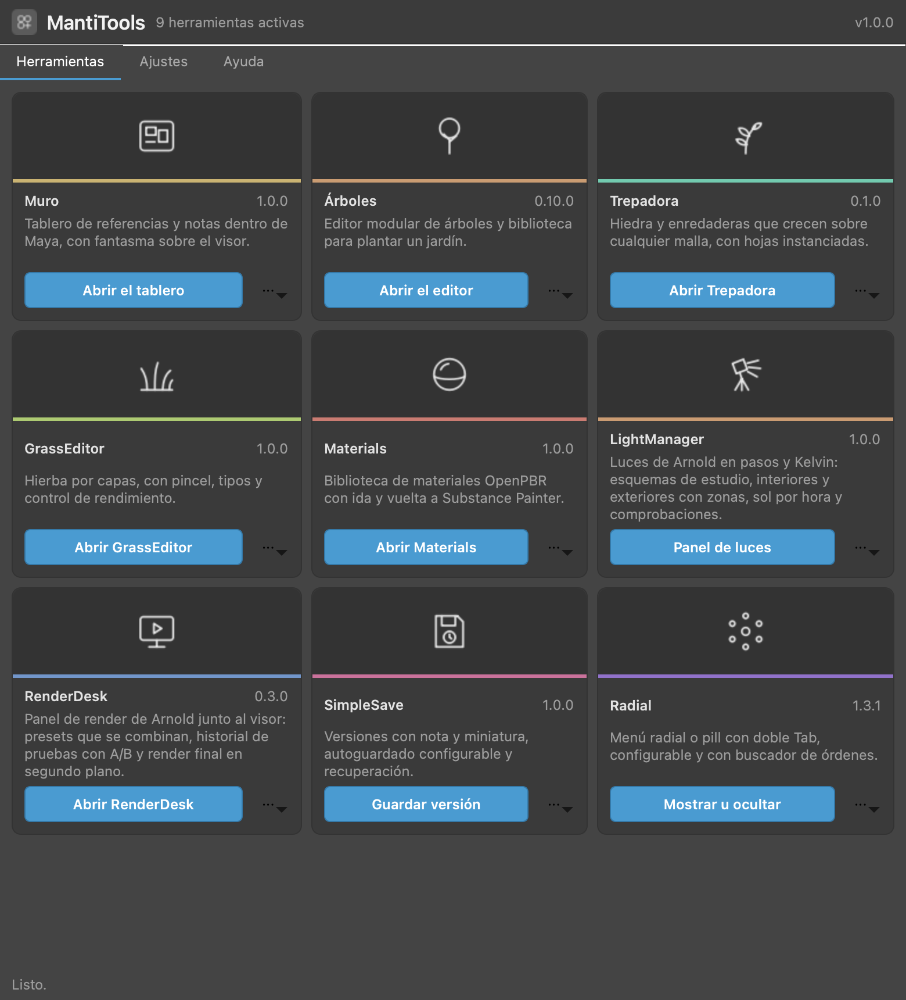

Primeros pasos
Con MantiTools instalado tienes tres puertas a las mismas herramientas: el estante, el menú y la ventana central. Esta página explica las tres en cinco minutos.
El estante#

Un icono por herramienta, en cuatro grupos separados por una raya fina. El orden es el de una escena de principio a fin:
| Grupo | Herramientas | Cuándo |
|---|---|---|
| Empezar | Muro | Antes de modelar: reunir referencias y notas. |
| Construir | Árboles, Trepadora, GrassEditor | Levantar el entorno: vegetación de lo grande a lo pequeño. |
| Materiales, luz y render | Materials, LightManager, RenderDesk | Dar el aspecto final y renderizar. |
| Siempre a mano | SimpleSave, Radial | En cualquier momento: guardar versiones y lanzar órdenes. |
El último icono, separado, abre la ventana central.
Clic izquierdo y clic derecho#
- Clic izquierdo: la acción principal de la herramienta (abrir su ventana, o en SimpleSave, guardar una versión).
- Clic derecho: sus órdenes rápidas, sin abrir la ventana.
| Herramienta | Clic izquierdo | Clic derecho |
|---|---|---|
| Muro | Abrir el tablero | Nuevo tablero, Importar tablero, Capturar visor, Fantasma |
| Árboles | Abrir el editor | Biblioteca para plantar, Árbol de ejemplo, Crear materiales, Convertir materiales a OpenPBR, Comprobar Árboles |
| Trepadora | Abrir Trepadora | Escenas de prueba (sencilla y ruina), Exportar planta, Exportar con hojas ligeras, Convertir materiales a OpenPBR |
| GrassEditor | Abrir GrassEditor | Nueva capa, Nueva capa con pincel, Jardín de ejemplo, Analizar rendimiento |
| Materials | Abrir Materials | Asignar a la selección, Cuentagotas, Enviar a Painter |
| LightManager | Panel de luces | Tres puntos en lo seleccionado, Comprobar la iluminación, Quitar todos los solos |
| RenderDesk | Abrir RenderDesk | Probar / parar, Instantánea, Modo render |
| SimpleSave | Guardar versión | Ver versiones, Recuperar autoguardado, Comparar versiones |
| Radial | Mostrar u ocultar | Volver a centrar, Configurar botones, Ajustes de tamaño en vivo |
| MantiTools | Ventana central | Ajustes, Ayuda |
Si borras el estante sin querer o le faltan iconos, MantiTools → Recrear estante lo vuelve a hacer.
El menú MantiTools#
En la barra de menús de Maya aparece MantiTools. Arriba hay un submenú por herramienta, con las mismas entradas que tenía cada una cuando se instalaba por separado. Abajo, las órdenes del pack:
| Entrada | Qué hace |
|---|---|
| Herramientas / Ajustes / Ayuda | Abre la ventana central en esa pestaña. |
| Documentación (wiki) | Abre esta wiki en el navegador. |
| Comprobar instalación | Revisa el pack y escribe un informe (más). |
| Recrear estante | Vuelve a crear el estante MantiTools. |
| Convertir materiales a OpenPBR | Pasa a openPBRSurface los materiales de Trepadora y Árboles de escenas viejas (más). |
El menú se puede arrancar como ventana flotante con la línea de puntos de arriba (tear-off), útil si lo usas mucho.
La ventana central#


Se abre con el último icono del estante o desde el menú. Tiene tres pestañas:
- Herramientas: una tarjeta por herramienta, con su botón principal y el menú «···» con el resto de órdenes.
- Ajustes: todas las opciones de todas las herramientas en un solo sitio.
- Ayuda: la wiki, las guías de cada herramienta y Comprobar instalación.
Todo sobre ella en Ventana central.
Tu primera escena en cinco minutos#
- Muro: clic en su icono, arrastra una o dos imágenes de referencia al tablero.
- Árboles: clic derecho → Árbol de ejemplo. Aparece un roble en el visor.
- Trepadora: clic derecho → Escena de prueba sencilla, y en la ventana de Trepadora pulsa Crecer.
- Materials: selecciona un objeto, abre Materials y haz doble clic en un material.
- LightManager: selecciona lo que quieras iluminar y clic derecho → Tres puntos en lo seleccionado.
- RenderDesk: Probar para ver el render en el visor de Arnold.
- SimpleSave: clic en su icono para guardar la primera versión con una nota.
Para hacerlo bien y con calma, sigue el Flujo de trabajo.